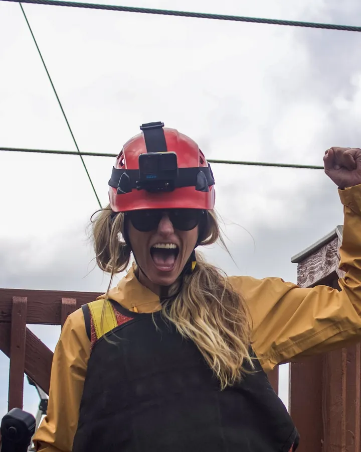
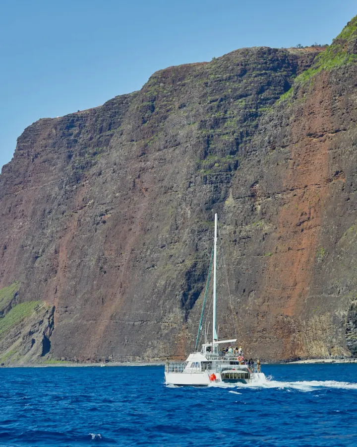
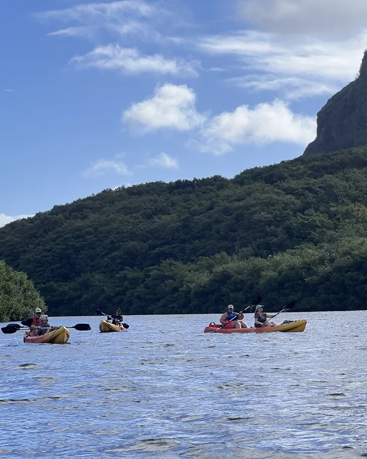
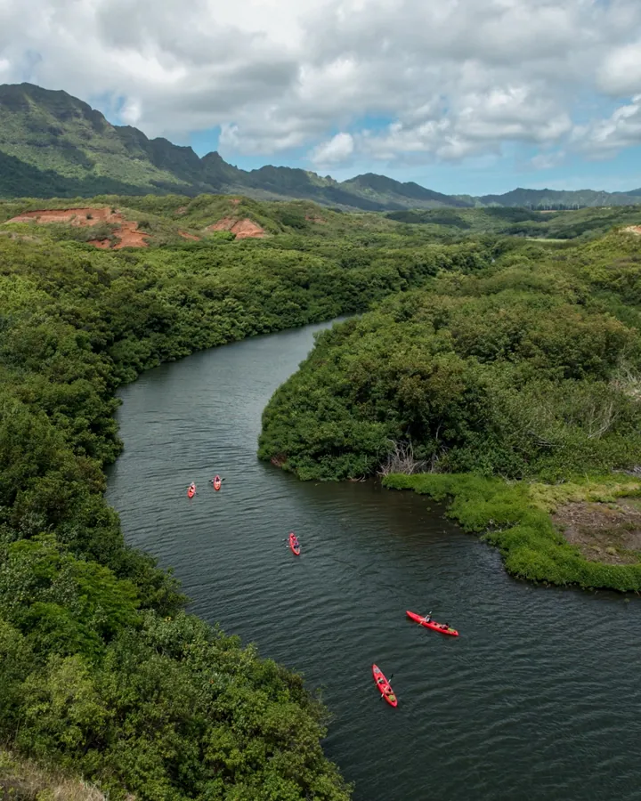

A tourism marketing agency that makes the content first.
OutVenture Media is a Hawaiʻi marketing agency for tour operators, activity brands and hospitality businesses. We produce the films, reels and photos, then run the social channels that carry them to the booking. Based on Kauaʻi, working across the islands.

Capt. Andy's Sailing Adventures · Outfitters Kauaʻi · Hoʻomalu Ke Kai

Why a production company and not an ads agency
Most marketing companies in Hawaiʻi start with the channel and ask you for the content. We start with the content, because for a tour, the content is the product. A reel built around the moment a guest would pay to feel does more for bookings than another month of boosted posts shot on a guide's phone. That is the thinking behind Reels to Reservations, the system every retainer runs on.
What the retainer covers
Content planning and scripting, scheduling and captions, community management, influencer and brand partnership management, and performance reporting. Shoots feed the content engine. The retainer keeps your channels working between shoots, so each film and photo set keeps earning bookings long after the day on location. Paid search and SEO are available inside the Tier 3 package.


Built by someone who worked the tours
Years of guiding, event production and storytelling on Kauaʻi taught us what guests remember. We build the content around that moment. It also means we know what a tour operator's week looks like: the 5 a.m. check-in, the weather call, the guest who books the second trip before the first one is over. The marketing fits around that, not the other way round.
What we do
Three services and one system, in the order they usually happen.
Half-day, single-day and multi-day shoots: brand films, reels and photography, written before they are shot. Shoots and films
The monthly retainer that plans, publishes and manages your channels around the content we make. How the retainer works
The right creators in front of the people who already trust them, managed from first message to final post. How we run a collaboration
The system behind it all: Dream, Plan, Decide, Experience, Advocate, with a reel for each stage. How the system works
From the journal
Social media marketing in Hawaiʻi: what actually works for tour operators
Why most tour operators in Hawaiʻi post and hope, what the operators who book from social do differently, and how a retainer should be measured.
Tourism video production: the five moments every tour film needs
A tour film that books is built from five moments, one for each stage of the guest's decision. Here is what they are, how to film them and where each one goes.
Questions operators ask
Do you work with operators outside Hawaiʻi?
Hawaiʻi is where we live and shoot. We take on operators elsewhere when the story is right, and a management retainer can run from anywhere once the content exists.
Do you run paid ads or SEO?
Paid search and SEO are available inside the Tier 3 management package, planned around the content we make. We do not sell ads on their own.
What does social media management cost?
Management runs on a monthly retainer with three tiers, listed on the social media management page. Every production is quoted from a brief.
Do you work with businesses that already have a social media manager?
Yes. Production works on its own, and your manager gets the films, reels and photos to run. The management retainer is for operators who want us to run the channels too.
How do you measure whether the content works?
We report against bookings and discoverability, not vanity numbers: what the content reached, what it sent to the booking path, and what came back. Nothing is guaranteed, and we never claim a result a client has not approved.
Tell us about your operation.
Share what you run and what you want guests to feel. We'll tell you how we would film it.
No pitch decks. A conversation about your operation first.